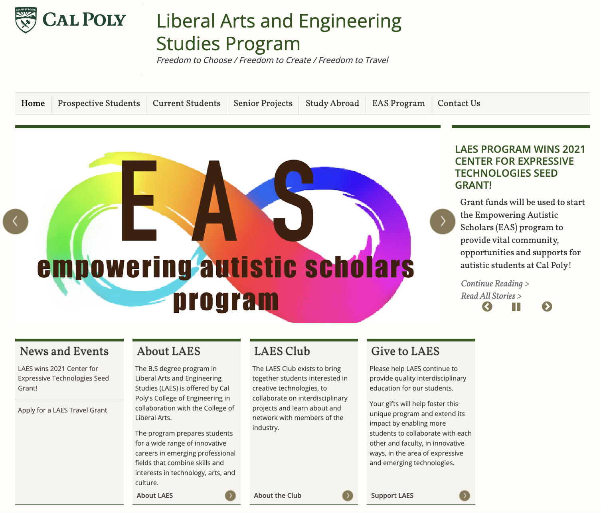
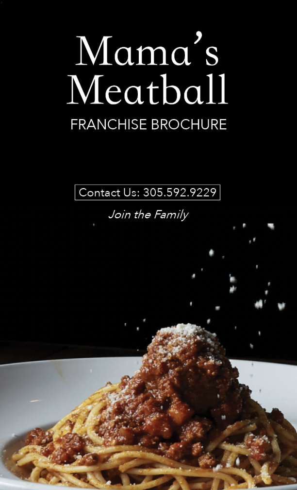
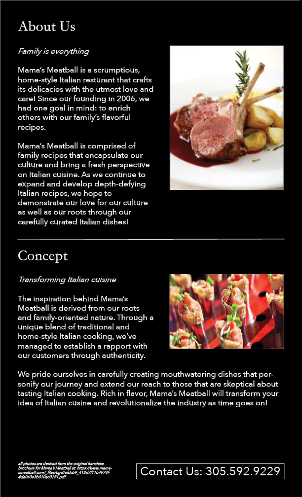
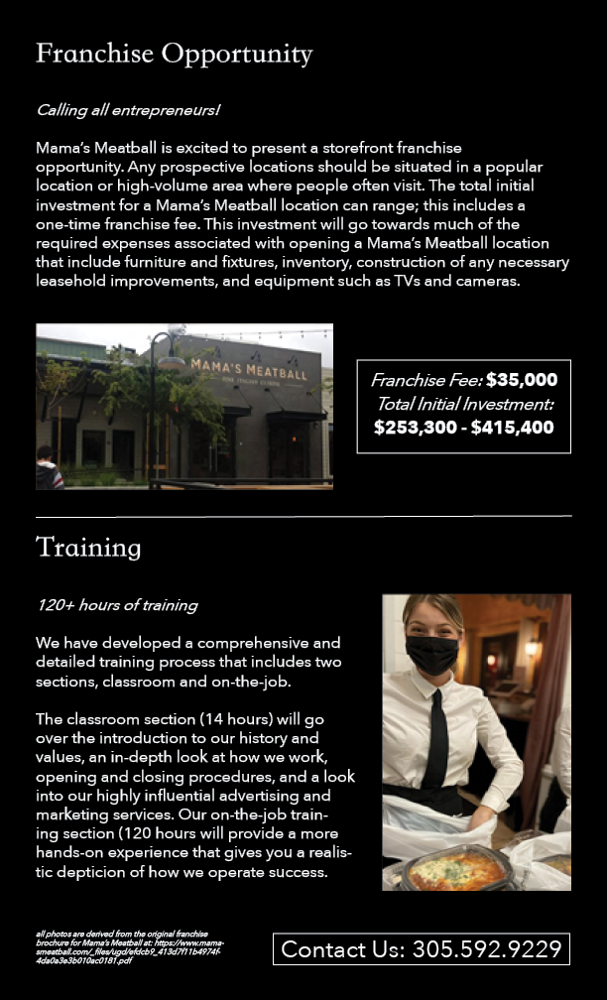
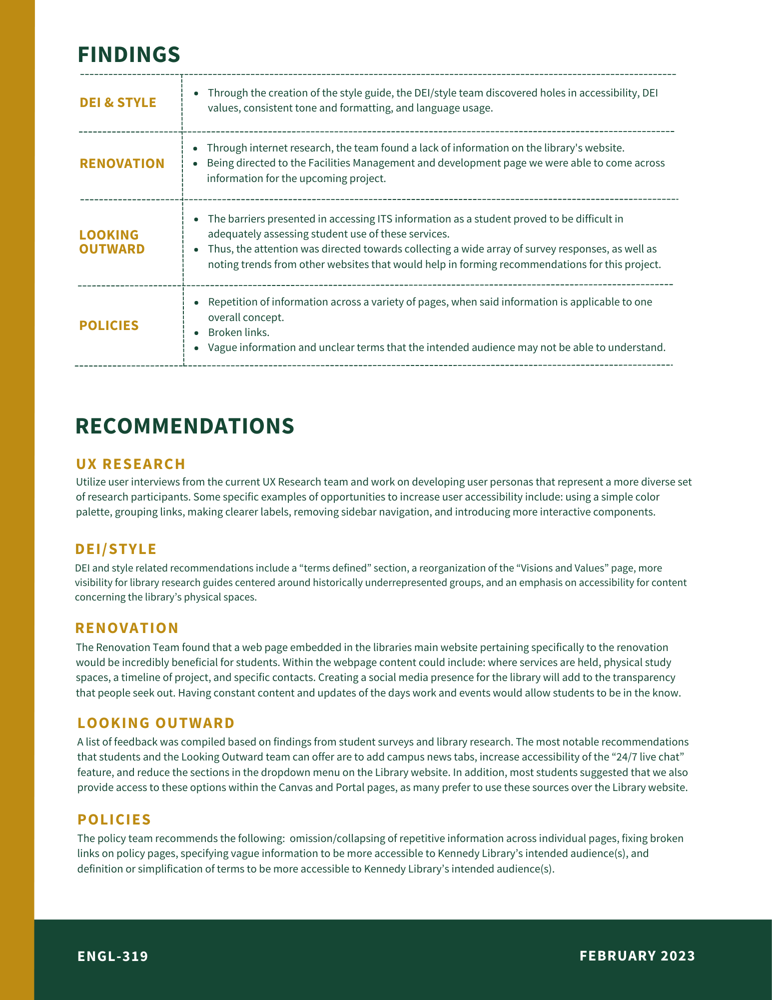
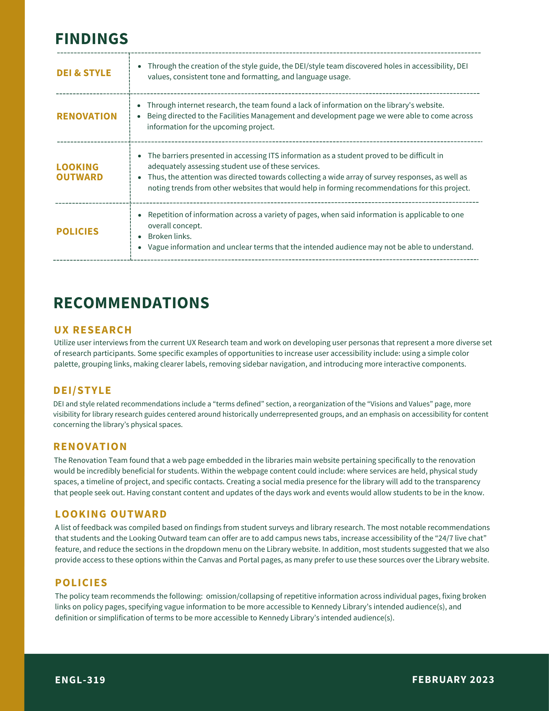
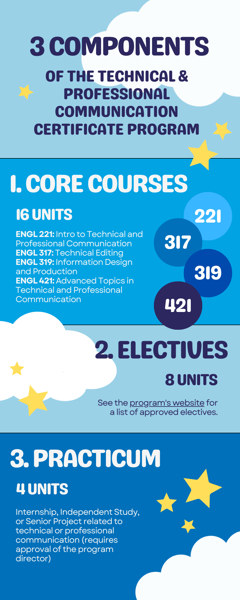

Technical Writing
LAES Website
Redesigning pages and conducting usability tests for the Liberal Arts and Engineering Studies department's website at Cal Poly SLO. Employed as a LAES department assistant from January 2022 to June 2022.
Used agile and scrum methodologies to complete deliverables and consult with department heads, Dr. David Gillette and Dr. Michael Haungs. Other job tasks included assisting the Empowering Autistic Scholars (EAS) Program director.
Visit the link below to view the site.

Information Redesign
Franchise brochure redesign for Mama's Meatball restaurant in San Luis Obispo.



Content Strategy Audit
1-Pager summarizing the findings of the Robert E. Kennedy Library content audit. See the link below to view the collaboratively written content audit report.
 

TPC Program Visualization

Screen Printing Infographic
Infographic about the screen printing process for ENGL 149 (Technical Writing for Engineers).